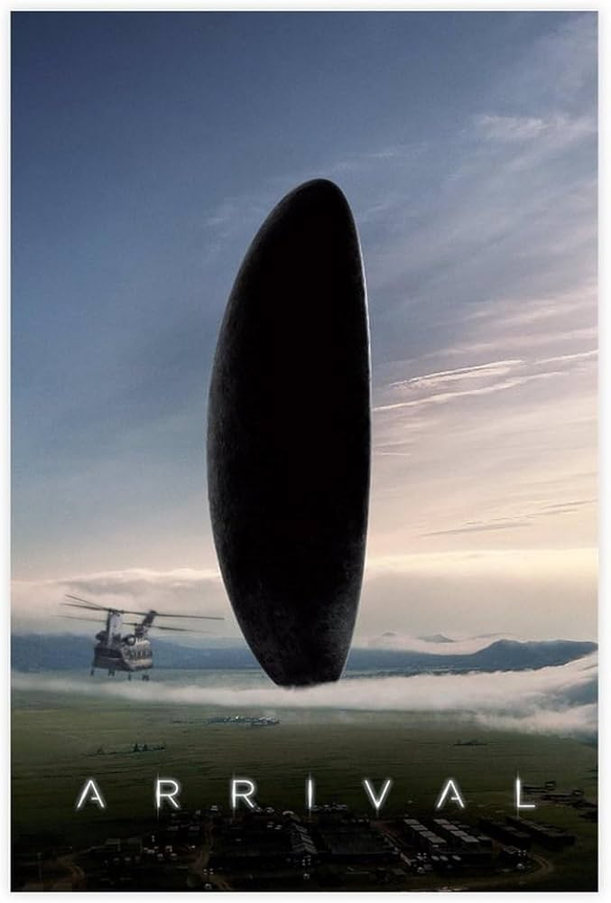

Sinopse
Uma linguista é convocada para entrar em contato com visitantes extraterrestres e descobrir se eles chegam em paz ou com intenções ocultas.
Por que gosto deste filme
O filme explora a comunicação entre espécies e mostra como escolhas pessoais podem mudar o rumo da história.
- Foco em linguística e pensamento não-linear.
- Atmosfera tensa tratada de forma diferente da padrão.
- Trilha sonora muito bem construída.
